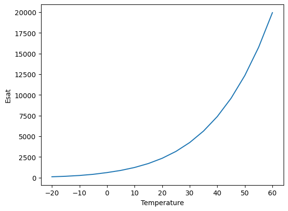
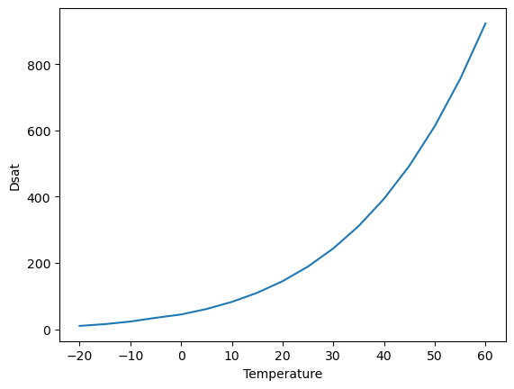
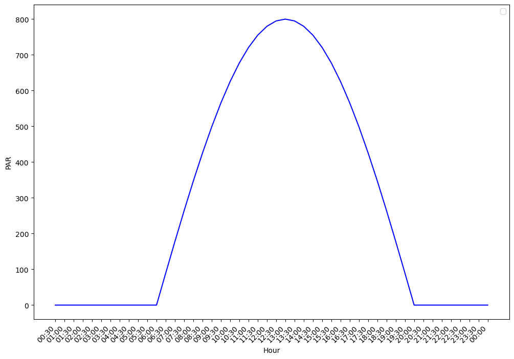
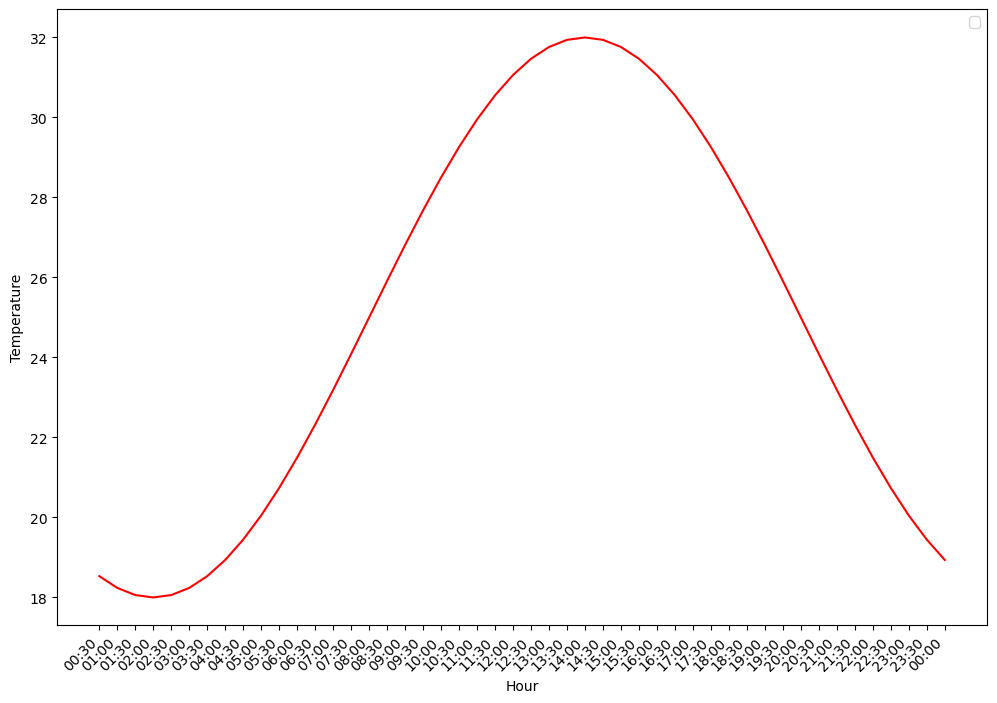
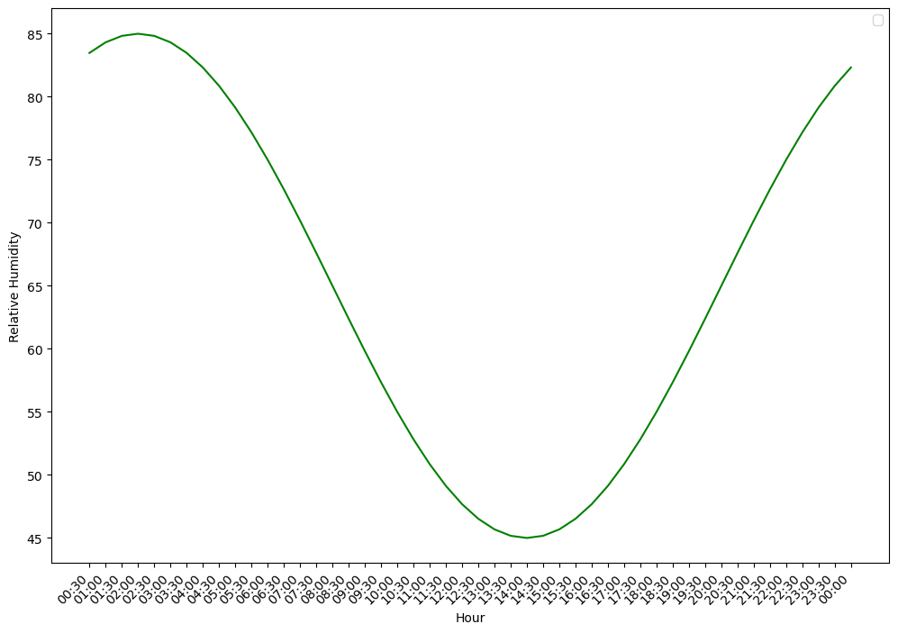

import matplotlib.pyplot as pltPackage utilities
get_elevation
def get_elevation(
lat:float, lon:float
)->float:
Query Open-Elevation API for elevation in meters. Used in Penman-Montieh ETP_h calculation
list_example_data
def list_example_data(
):
List all available example data files in the package data folder.
load_example_data
def load_example_data(
filename, sep:str=','
):
satvap
def satvap(
tc:float, # Temperature (degC)
)->tuple: # esat: Saturation vapor pressure (Pa), desat: d(esat)/dT (Pa/K).
Compute saturation vapor pressure (esat) and the rate of change in saturation vapor pressure with respect to temperature (dsat = d(esat)/dT).
Polynomial approximations are from: Flatau et al. (1992) Polynomial fits to saturation vapor pressure. Journal of Applied Meteorology 31:1507-1513. Input temperature is Celsius.
Parameters:
- tc: Temperature (degC).
Returns:
- esat: Saturation vapor pressure (Pa)
- desat: d(esat)/dT (Pa/K).
Example satvap():
saturation_vapor_pressure_esat = []
saturation_vapor_pressure_dsat = []
temperature_range = []
for each_temperature in range(-20, 65, 5):
temperature_range.append(each_temperature)
saturation_vapor_pressure_esat.append(satvap(each_temperature)[0])
saturation_vapor_pressure_dsat.append(satvap(each_temperature)[1])
plt.xlabel("Temperature")
plt.ylabel("Esat")
plt.plot(temperature_range, saturation_vapor_pressure_esat)
plt.show()
plt.xlabel("Temperature")
plt.ylabel("Dsat")
plt.plot(temperature_range, saturation_vapor_pressure_dsat)
plt.show()
latvap
def latvap(
tc:float, # Temperature (degC).
mmh2o:float, # Molecular mass of water (kg/mol).
)->float: # Latent heat of vaporization (J/mol).
Latent heat of vaporization (J/mol) at temperature tc (degC).
Parameters:
- tc: Temperature (degC).
- mmh2o: Molecular mass of water (kg/mol).
Returns:
- val: Latent heat of vaporization (J/mol).
calc_radiative_forcing_qa
def calc_radiative_forcing_qa(
solar_down, # Total downward solar radiation incident on the leaf (W/m2).
Split equally between visible and near-infrared wavebands.
leaf, # Leaf object with the following attributes:
- rho : list[float]
Leaf reflectance for visible and near-infrared wavebands (-).
- tau : list[float]
Leaf transmittance for visible and near-infrared wavebands (-).
- emiss : float
Leaf emissivity (-).
ground_albedo, # Ground surface albedo for visible and near-infrared wavebands (-).
ground_lw, # Upward longwave radiation emitted by the ground surface (W/m2).
irsky, # Downward atmospheric longwave radiation (W/m2).
): # Leaf radiative forcing (W/m2 leaf). Sum of absorbed solar radiation
across both wavebands and absorbed longwave radiation from sky and
ground.
Calculate leaf radiative forcing Qa (Equation 10.3).
Compute the total radiation absorbed by a leaf from solar (visible and near-infrared wavebands) and longwave (sky and ground) sources. Solar radiation is split equally between visible and near-infrared wavebands, and includes both direct and ground-reflected components.
Implements Equation (10.3) from Bonan (2019):
Qa = Σ_Λ S↓_Λ (1 + ρg_Λ)(1 - ρℓ_Λ - τℓ_Λ) + εℓ (L↓sky + L↑g)where Λ denotes visible and near-infrared wavebands, ρg is ground albedo, ρℓ and τℓ are leaf reflectance and transmittance, and εℓ is leaf emissivity. The factor (1 + ρg) accounts for solar radiation striking the upper leaf surface directly plus radiation reflected from the ground striking the lower surface.
Parameters:
solar_down: Total downward solar radiation incident on the leaf (W/m2). Split equally between visible and near-infrared wavebands.
leaf: Leaf object with the following attributes:
- rho: Leaf reflectance for visible and near-infrared wavebands (-).
- tau: Leaf transmittance for visible and near-infrared wavebands (-).
- emiss: Leaf emissivity (-).
ground_albedo: Ground surface albedo for visible and near-infrared wavebands (-).
ground_lw: Upward longwave radiation emitted by the ground surface (W/m2).
irsky: Downward atmospheric longwave radiation (W/m2).
Returns:
- qa: Leaf radiative forcing (W/m2 leaf). Sum of absorbed solar radiation across both wavebands and absorbed longwave radiation from sky and ground.
arrhenius_function
def arrhenius_function(
tl, # Leaf Temperature (K)
ha, # Activation Energy (J mol–1)
):
Temperature response function used in leaf_photosynthesis()
Follows Eq 11.34:
f(t) = exp((deltaHa/298.15*r) * (1-298.15/Tl))where deltaHa is the activation energy (J mol–1), Tl is the leaf temperature and r is the Universal gas constant (J/K/mol)
Parameters:
- tl: Leaf Temperature (K)
- ha: Activation Energy (deltaHa). This parameter controls how sensible each enzyme is to warming. A high deltaHa means the enzyme’s speed changes dramatically with temperature; a low deltaHa means it’s more stable.
At 25°C (298.15 K), the function returns exactly 1.0, that’s the reference point. Above 25°C, it returns values greater than 1 (faster). Below 25°C, values less than 1 (slower).
Example arrhenious_function()
for each_temperature in [10, 20, 30, 40]:
print(each_temperature)
print(arrhenius_function(tl=each_temperature, ha=9430.0))10
2.4874007435848738e-48
20
1.0565873380195099e-23
30
1.7111652386662447e-15
40
2.1776356758106435e-11inhibition_function
def inhibition_function(
tl, # Leaf Temperature (K)
hd, # Deactivation Energy (J mol–1)
se, # Entropy term (MISSING UNITS)
fc, # Overheat Protection (MISSING UNITS)
):
High-temperature inhibition function used in leaf_photosysthesis(). This function represents thermal breakdown of biochemical processes.
Follows Eq 11.36:
1 + exp[(298.15·ΔS - ΔHd) / (298.15·R)]fH(Tl) = ────────────────────────────────────────── 1 + exp[(ΔS·Tl - ΔHd) / (R·Tl)]
where deltaHd is the deactivation energy (J mol-1), Tl is the leaf temperature, deltaS is an entropy term and r is the Universal gas constant (J/K/mol).
The combination arrhenius_function() * inhibition_function() creates the peaked response shown in the textbook’s Figure 11.3 — activity rises, peaks at an optimum, then falls.
Parameters:
- tl : Leaf Temperature (K)
- hd : Deactivation Energy (J mol–1)
- se : Entropy term (MISSING UNITS)
- fc : Overheat Protection (MISSING UNITS)
brent_root
def brent_root(
func, # Function with signature func(physcon, atmos, leaf, flux, x) -> (flux, fx)
physcon:PhysCon, atmos:Atmos, leaf:Leaf, flux:Flux, xa:float, xb:float, tol:float, # Tolerance for the root.
)->tuple: # Updated flux structure.
Brent’s root finder
Use Brent’s method to find the root of a function, which is known to exist between xa and xb. The root is updated until its accuracy is tol. func is the name of the function to solve. The variable root is returned as the root of the function. The function being evaluated has the definition statement:
function [flux, fx] = func (physcon, atmos, leaf, flux, x)
The function func is exaluated at x and the returned value is fx. It uses variables in the physcon, atmos, leaf, and flux structures. These are passed in as input arguments. It also calculates values for variables in the flux structure so this must be returned in the function call as an output argument.
Input: bracket [a, b] where f(a) and f(b) have opposite signs
│
▼
┌───────────────────────────┐
│ Verify bracket: │
│ f(a) · f(b) < 0 ? │
│ If not → ERROR │
└───────────────────────────┘
│
▼
┌───────────────────────────┐
│ Initialize: │
│ c = b, fc = fb │
│ b = best guess │
└───────────────────────────┘
│
▼
┌───────────────────────────┐
│ Main loop │
│ │
│ 1 Ensure b,c bracket root│
│ 2 Keep b as best guess │
│ 3 Converged? → STOP │
│ │
│ 4 Can we interpolate? │
│ ├─ YES: secant or │
│ │ inverse quadratic │
│ │ ├─ Step OK? USE │
│ │ └─ Step bad? │
│ │ BISECT │
│ └─ NO: BISECT │
│ │
│ 5 Take step: b = b + d │
│ 6 Evaluate f(b) │
│ 7 Loop back to 1 │
└───────────────────────────┘
│
▼
Return b as roottime_to_float
def time_to_float(
time_str
):
diurnal_par
def diurnal_par(
hour, # Hour of day (0-24). E.g., 6.5 = 6:30 AM.
par_max:float=800.0, # Peak shortwave radiation at solar noon (W/m2).
sunrise:float=6.0, sunset:float=20.0
):
Shortwave radiation following a sinusoidal daytime curve.
PAR = par_max * sin(π * (hour - sunrise) / daylength)
Returns total shortwave in W/m² (split 50/50 VIS/NIR later). At night (before sunrise or after sunset): returns 0.
Example diurnal_par()
from datetime import datetime, timedelta
import matplotlib.pyplot as plt# Initialize start time (00:00)
start_time = datetime.strptime("00:00", "%H:%M")
# Create list of times every 30 minutes
current_time = start_time
# Create storing objects
time = []
par = []
# 24 hours × 2 half-hour intervals
for _ in range(48):
# Generate interval
current_time += timedelta(minutes=30)
time.append(current_time.strftime("%H:%M"))
# Calulate PAR
par.append(diurnal_par(hour=time_to_float(current_time.strftime("%H:%M"))))# Plot
plt.figure(figsize=(12, 8))
plt.plot(time, par, color="blue")
plt.xticks(rotation=45, ha="right")
plt.legend()
plt.xlabel("Hour")
plt.ylabel("PAR")
plt.show()/var/folders/xw/8jb87np92s1_mncrtmpvkzb80000gn/T/ipykernel_5902/1713457667.py:5: UserWarning: No artists with labels found to put in legend. Note that artists whose label start with an underscore are ignored when legend() is called with no argument.
plt.legend()
diurnal_temperature
def diurnal_temperature(
hour, t_mean:float=25.0, t_amp:float=7.0, t_min_hour:float=5.5
):
Air temperature following a sinusoidal curve with minimum at dawn.
Tair = t_mean + t_amp * sin(2π * (hour - t_min_hour) / 24 - π/2)
This gives: Minimum at t_min_hour (dawn, ~5:30) Maximum at t_min_hour + 6 = 11:30… but real Tmax lags to ~14:00.
To get the ~2-hour lag, we shift the phase: Tair = t_mean + t_amp * sin(2π * (hour - t_max_hour) / 24) where t_max_hour = 14.0 (2 PM), so minimum is at 14 - 12 = 2 AM… That’s too early for Tmin.
Better approach: use an asymmetric function. Simpler: just use a sine with Tmax at 14:00. Tair = t_mean + t_amp * sin(2π * (hour - 8.0) / 24) This gives Tmax at 14:00 and Tmin at 2:00 AM. At dawn (6:00): T = 25 + 7sin(2π(-2)/24) = 25 + 7sin(-π/6) = 25 - 3.5 = 21.5°C At noon (12:00): T = 25 + 7sin(2π4/24) = 25 + 7sin(π/3) = 25 + 6.06 = 31.1°C At 14:00: T = 25 + 7sin(2π6/24) = 25 + 7sin(π/2) = 32°C ← max At 20:00: T = 25 + 7sin(2π*12/24) = 25 + 0 = 25°C
That looks realistic!
Example diurnal_temperature()
# Initialize start time (00:00)
start_time = datetime.strptime("00:00", "%H:%M")
# Create list of times every 30 minutes
current_time = start_time
# Create storing objects
time = []
temp = []
# 24 hours × 2 half-hour intervals
for _ in range(48):
# Generate interval
current_time += timedelta(minutes=30)
time.append(current_time.strftime("%H:%M"))
# Calulate PAR
temp.append(diurnal_temperature(hour=time_to_float(current_time.strftime("%H:%M"))))# Plot
plt.figure(figsize=(12, 8))
plt.plot(time, temp, color="red")
plt.xticks(rotation=45, ha="right")
plt.legend()
plt.xlabel("Hour")
plt.ylabel("Temperature")
plt.show()/var/folders/xw/8jb87np92s1_mncrtmpvkzb80000gn/T/ipykernel_5902/3388095162.py:5: UserWarning: No artists with labels found to put in legend. Note that artists whose label start with an underscore are ignored when legend() is called with no argument.
plt.legend()
diurnal_relhum
def diurnal_relhum(
hour, rh_mean:float=65.0, rh_amp:float=20.0
):
Relative humidity, anti-correlated with temperature.
RH is highest at dawn and lowest in the afternoon. We use the OPPOSITE phase of temperature: RH = rh_mean - rh_amp * sin(2π * (hour - 8) / 24)
This gives: Maximum at 2:00 AM: 65 + 20 = 85% At dawn (6:00): 65 + 10 = 75% At noon (12:00): 65 - 17.3 = 47.7% Minimum at 14:00: 65 - 20 = 45% At sunset (20:00): 65%
The negative sign flips the phase relative to temperature.
Example diurnal_relhum()
# Initialize start time (00:00)
start_time = datetime.strptime("00:00", "%H:%M")
# Create list of times every 30 minutes
current_time = start_time
# Create storing objects
time = []
relative_humidity = []
# 24 hours × 2 half-hour intervals
for _ in range(48):
# Generate interval
current_time += timedelta(minutes=30)
time.append(current_time.strftime("%H:%M"))
# Calulate PAR
relative_humidity.append(
diurnal_relhum(hour=time_to_float(current_time.strftime("%H:%M")))
)# Plot
plt.figure(figsize=(12, 8))
plt.plot(time, relative_humidity, color="Green")
plt.xticks(rotation=45, ha="right")
plt.legend()
plt.xlabel("Hour")
plt.ylabel("Relative Humidity")
plt.show()/var/folders/xw/8jb87np92s1_mncrtmpvkzb80000gn/T/ipykernel_5902/1613661216.py:5: UserWarning: No artists with labels found to put in legend. Note that artists whose label start with an underscore are ignored when legend() is called with no argument.
plt.legend()
SurEau utilities
Soil utilities
compute_theta_at_psi_VG
def compute_theta_at_psi_VG(
PsiTarget:ArrayLike, # Target soil water potential in **MPa** (positive = suction).
For example, 1.5 MPa corresponds to the conventional wilting
point.
thetaRes:ArrayLike, # Residual volumetric water content θ_r (m³/m³).
thetaSat:ArrayLike, # Saturated volumetric water content θ_s (m³/m³).
alpha_vg:ArrayLike, # Van Genuchten α parameter (cm⁻¹).
n_vg:ArrayLike, # Van Genuchten n parameter (dimensionless).
)->ndarray: # Volumetric water content θ at the target potential (m³/m³).
Compute volumetric water content at a given soil water potential using the van Genuchten (1980) water retention model.
The van Genuchten closed-form retention curve relates the effective saturation S_e to the matric potential ψ (suction) via two shape parameters α and n:
.. math::
\theta(\psi) = \theta_r
+ \frac{\theta_s - \theta_r}
{\bigl[1 + (\alpha \,|\psi|)^{n}\bigr]^{m}}where:
- θ_s is the saturated water content (m³/m³),
- θ_r is the residual water content (m³/m³),
- α is related to the inverse of the air-entry pressure (cm⁻¹),
- n is the pore-size distribution index (dimensionless, n > 1),
- m = 1 − 1/n (Mualem constraint).
.. note:: In SurEau-Ecos, PsiTarget is supplied in MPa (positive suction convention) and is converted internally to the hPa (≡ cm H₂O) domain expected by the VG α parameter via multiplication by 10 000.
compute_theta_at_psi_Campbell
def compute_theta_at_psi_Campbell(
PsiTarget:ArrayLike, # Target soil water potential (MPa, **negative** = suction).
thetaSat:ArrayLike, # Saturated volumetric water content θ_s (m³/m³).
psie:ArrayLike, # Air-entry potential ψ_e (MPa, **negative**).
b:ArrayLike, # Campbell shape parameter (positive, dimensionless).
)->ndarray: # Volumetric water content θ at the target potential (m³/m³).
Compute volumetric water content at a given soil water potential using the inverse Campbell (1974) retention curve.
Starting from the Campbell retention equation:
.. math::
\psi = \psi_e \left(\frac{\theta}{\theta_s}\right)^{-b}algebraic inversion yields the water content at a target potential ψ_target:
.. math::
\theta(\psi_{\text{target}}) = \theta_s
\left(
\frac{-\psi_{\text{target}}}{-\psi_e}
\right)^{-1/b}The double negation ensures correct handling of the sign convention (both ψ_target and ψ_e are negative / suction).
Flux conversions
flux_leaf_to_stand
def flux_leaf_to_stand(
x, dt, LAI:float=1.0
):
mmol/m²leaf/s → mm/m²soil over dt hours.
flux_mm_to_mmol_m2leaf_s
def flux_mm_to_mmol_m2leaf_s(
x, dt, LAI
):
mm/m²soil over dt hours → mmol/m²leaf/s.
convert_FtoV
def convert_FtoV(
x, RFC, layer_thickness
):
Volumetric water content (m³/m³) → water height (mm).
Climate utilities
compute_VPD
def compute_VPD(
RH, T
):
Compute VPD [kPa] from relative humidity [%] and temperature [°C].
compute_slope_sat
def compute_slope_sat(
T
):
Slope of saturation vapour pressure curve [kPa/°C].
compute_ETP_PT
def compute_ETP_PT(
T_mean, net_radiation, PT_coeff, G:float=0.0
):
Priestley-Taylor PET [mm].
compute_ETP_PM
def compute_ETP_PM(
T_mean, net_radiation, u, vpd, G:float=0.0
):
Penman-Monteith PET [mm].
Radiation conversions
Rg_MJ_to_Watt
def Rg_MJ_to_Watt(
Rg_MJ, N_hours
):
MJ → W/m² given N_hours.
Rg_Watt_to_PPFD
def Rg_Watt_to_PPFD(
Rg_W, J_to_mol:float=4.6, frac_PAR:float=0.5
):
W/m² → µmol/m²/s PPFD.
declination
def declination(
DOY
):
Solar declination [rad].
potential_PAR
def potential_PAR(
time_of_day, lat, DOY
):
Potential PAR [W/m²] at given hours, latitude, and DOY.
daylength
def daylength(
latitude, JDay
):
Compute sunrise [h], sunset [h], daylength [h].
radiation_diurnal_pattern
def radiation_diurnal_pattern(
time_sec, daylength_sec
):
Fractional radiation at time_sec from sunrise, given daylength in seconds.
temperature_diurnal
def temperature_diurnal(
time_sec, tmin, tmax, tmin_prev, tmax_prev, tmin_next, daylength_sec
):
Sinusoidal temperature disaggregation (McMurtrie et al. 1990).
rh_diurnal
def rh_diurnal(
temperature, tmin, tmax, rh_min, rh_max
):
Linear RH disaggregation.